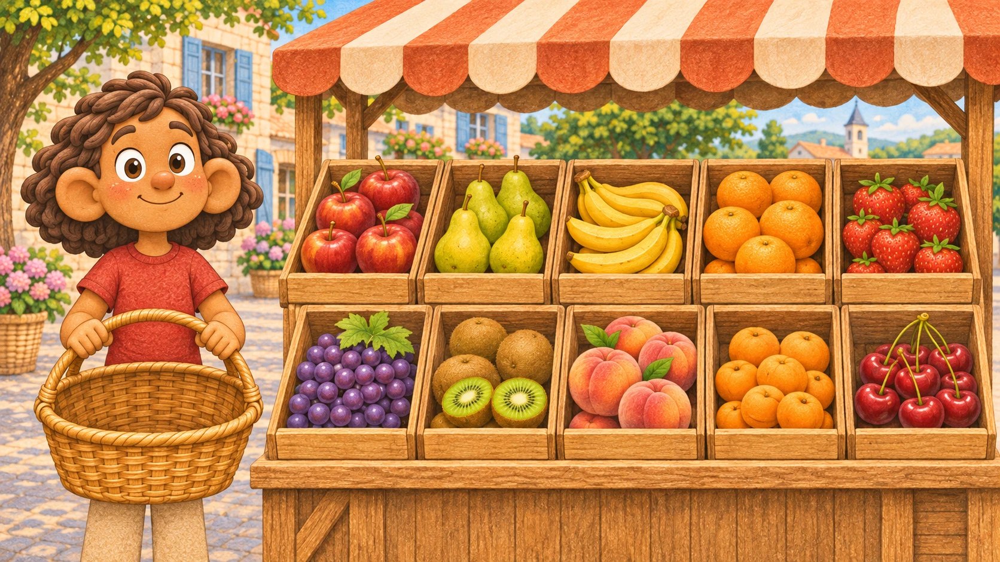

← Mes jeux
Au marché des fruits
Niveau 2
J’écoute · Je lis · Je choisis
Bienvenue au marché !
Retrouve les fruits, puis prépare le panier de la petite fille.

🔊
1 · Je découvre les fruits
Deux séries de cinq mots à associer
🧺
2 · Je fais les courses
Dix commandes avec des quantités
← Revoir le pique-nique
Niveau 3 · Au café →
← Les deux petits jeux
🔊
Vérifier mon panier
Continuer →